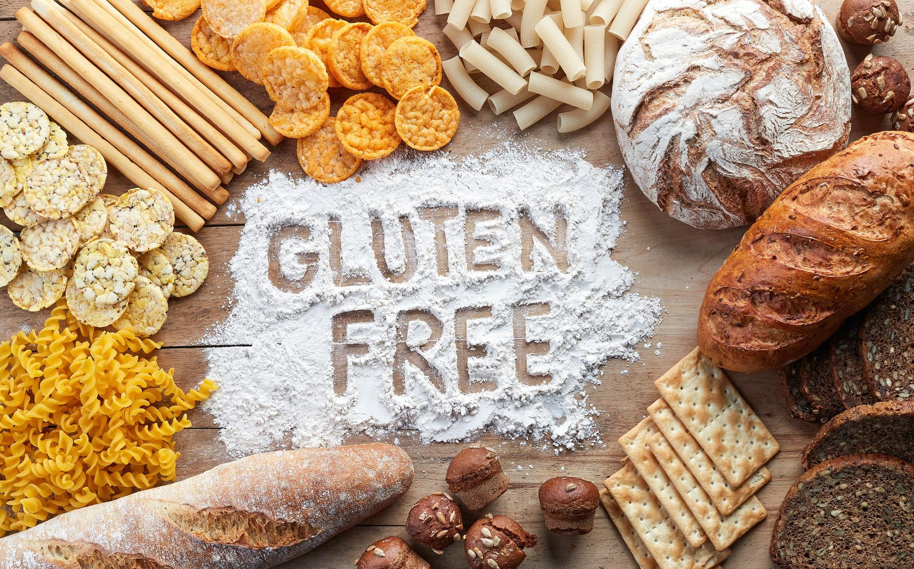

MARCIN BLOG
Dieta Bezglutenowa
Zasady diety bezglutenowej
Dieta bezglutenowa nie różni się w podstawowych założeniach od zasad zdrowego odżywiania. Jedyna różnica polega na całkowitej eliminacji glutenu u osób z celiakią, alergią lub nadwrażliwością na gluten. Podstawą jadłospisu powinny być produkty świeże,
wysokiej jakości jedzone w 4-5 posiłkach dziennie. Posiłki należy spożywać regularnie co ok. 3 godziny, śniadanie jeść do godziny po przebudzeniu, a kolację 2-3 godziny przed snem.

Dieta bezglutenowa
Bardzo modna ostatnio dieta bezglutenowa budzi coraz większe zainteresowanie. Na sklepowych półkach ze zdrową żywnością widać coraz więcej produktów oznaczonych znakiem „gluten free”. Czym tak naprawdę jest dieta bezglutenowa? Czy dla każdego
jest ona właściwa? Przedstawiamy najważniejsze fakty i mity diety bezglutenowej
Zalety diety bezglutenowej
Wprowadzenie diety bezglutenowej do codziennego życia jest szczególnie dobroczynne dla małych dzieci i dojrzewających nastolatków, u których zahamowanie wzrostu ciała i zahamowanie przybierania masy ciała mogłoby być druzgocące w skutkach. Zatrzymanie
dojrzewania w wieku dziecięcym i nastoletnim jest szczególnie niezdrowe dla przyszłego dorosłego życia. U osób dorosłych, prócz wyhamowania nieprzyjemnych opisanych objawów, dieta bezglutenowa pozwala na powstrzymanie dalszego uszkadzania
kosmków jelitowych.